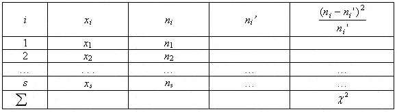
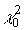

Проверка гипотезы о нормальном распределениис
помощью критерия хи-квадрат
Дискретный вариационный ряд
Для того чтобы вычислить статистику
 при нормальном
распределении, нужно:
при нормальном
распределении, нужно:
- Вычислить теоретические частоты
где n — объем выборки, h — шаг (разность
между соседними вариантами), sx
— выборочное среднее квадратичное отклонение,
- Составить расчетную таблицу по следующему
образцу:

- Определить критерий
по формуле:

и сравнить с критическим значением
. Значение
удобно вычислять с помощью
функции Excel ХИ2ОБР. Например,
=ХИ2ОБР(0,05; 5)
Примечание 1. Число степеней
свободы принять равным k = n – 3
.